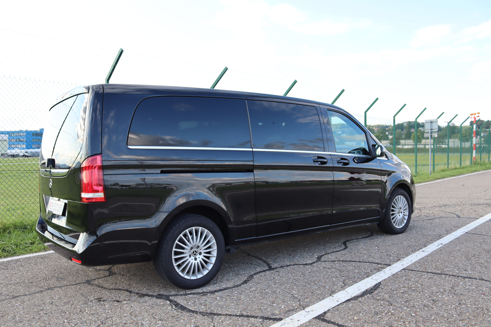
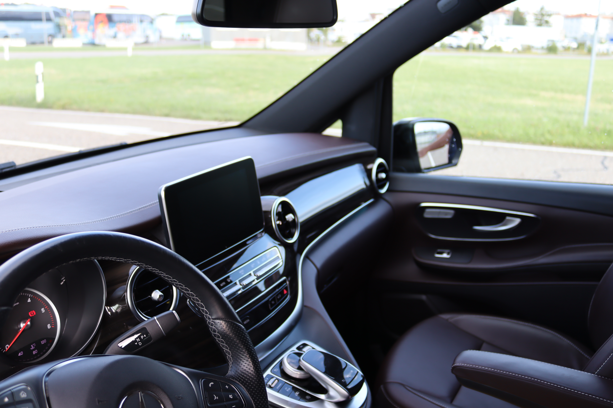
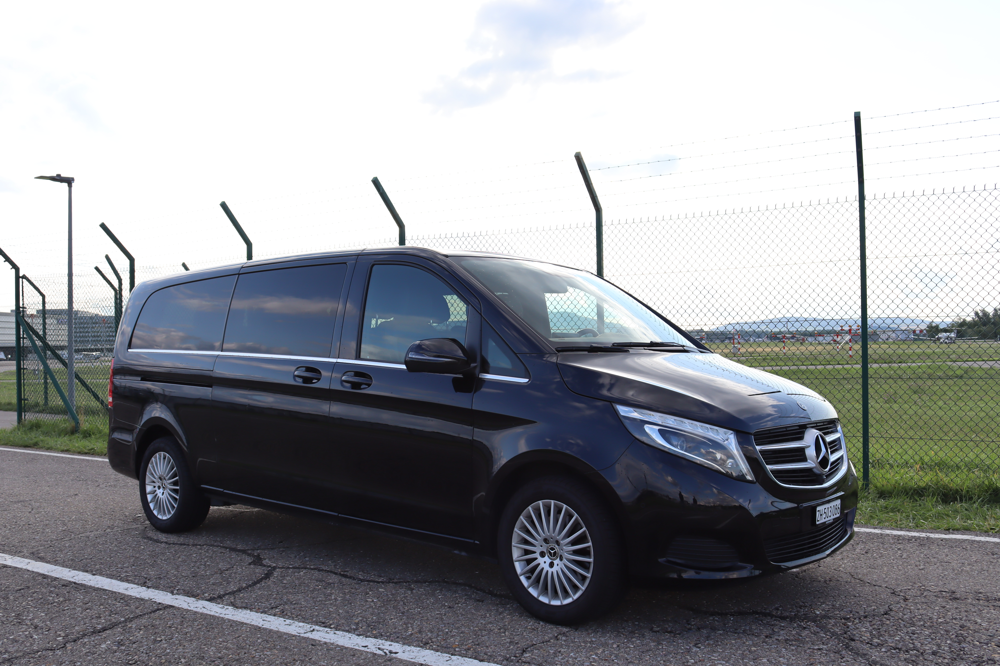
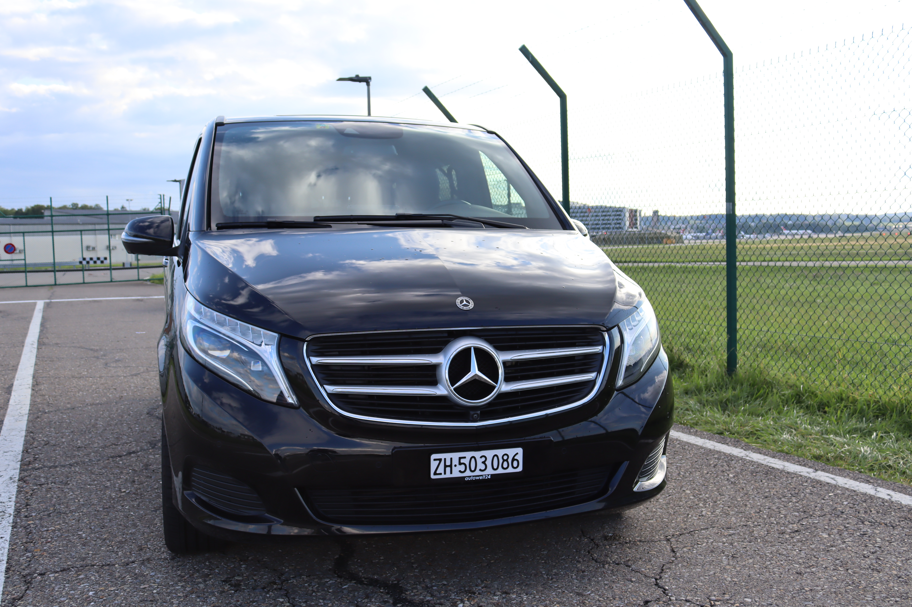

For companies & limousine services
When an additional V-Class is needed at short notice, we provide a reliable solution for other limousine companies, chauffeur companies, hotels, agencies and corporate clients.

The Mercedes V-Class is an elegant solution for groups, companies, events and professional chauffeur assignments. At Swiss Rent a Car in Kloten near Zurich, you can rent the V-Class yourself, use it for other limousine companies or book it directly as a comfortable chauffeur service for transfers, shuttle rides and business trips.
Spacious, well presented and flexible: our Mercedes V-Class is suitable for private group trips as well as demanding business and chauffeur assignments.
When an additional V-Class is needed at short notice, we provide a reliable solution for other limousine companies, chauffeur companies, hotels, agencies and corporate clients.
Comfortable transfers from Zurich Airport, hotel shuttles, crew transfers and rides for guests with luggage. A professional chauffeur is available on request.
The V-Class is ideal as an event shuttle, VIP vehicle, wedding transfer or group vehicle for safe and well organized rides throughout Switzerland.
If you want to rent a Mercedes V-Class in Zurich, you need a vehicle that is clean, spacious and ready for use. Our location in Kloten is close to Zurich Airport, making it ideal for pickups, transfers, corporate rides and international guests.
The V-Class is in high demand because it offers more space than classic vans while still looking professional and representative. That is why it is also a strong addition for limousine service providers, chauffeur services and event partners.

For customers who do not want to drive themselves, we offer organized chauffeur rides: punctual, discreet and tailored to your journey or event schedule.
Zurich Airport, hotels, trade fairs, company locations, ski resorts, restaurants and private addresses: we plan the ride to match your group.
Book a V-Class with chauffeur by the hour when several stops, flexible waiting times or a full event schedule need to be covered.
For other limousine companies, hotels and agencies, we rent out the V-Class as flexible extra capacity when vehicle class, availability or guest comfort is crucial.
A look at our V-Class: a well-kept vehicle, representative appearance and generous space for guests.



The Mercedes V-Class is one of the most requested vehicles for professional mobility in Zurich. It combines generous space, comfort and a serious appearance. That is why it is often booked for airport transfers, corporate rides, event shuttles, weddings, VIP guests and group travel. At Swiss Rent a Car, you can rent the V-Class in Zurich-Kloten or organize a chauffeur ride directly.
For other limousine companies and chauffeur operators, a V-Class is often essential when more seats, additional luggage space or short-term capacity is needed. We support B2B clients, hotels, agencies and chauffeur services with flexible solutions so guests can be transported punctually, comfortably and professionally.
Our chauffeur service is suitable for direct transfers, hourly bookings and full-day schedules. Whether from Zurich Airport to Davos, Lucerne, Interlaken, St. Moritz or to an event in Zurich city, we plan the ride according to passenger count, luggage, timing and service requirements.
The key answers about V-Class rental and chauffeur service in Zurich-Kloten.
Yes, Swiss Rent a Car offers the Mercedes V-Class in Zurich-Kloten as a chauffeur service for transfers, shuttle rides, events and business trips.
Yes, the V-Class is suitable for companies, hotels, agencies and other limousine companies that need additional capacity, more seats or short-notice availability.
The Mercedes V-Class can be rented from Swiss Rent a Car in Kloten near Zurich Airport or requested as a transfer vehicle with chauffeur.
Send us the date, route, number of passengers and preferred service. We will check availability and send you a suitable offer for rental, B2B rental or chauffeur service.